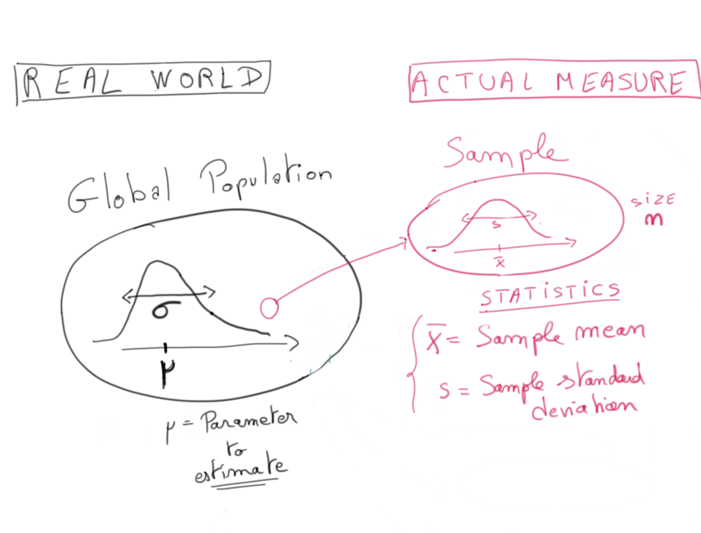
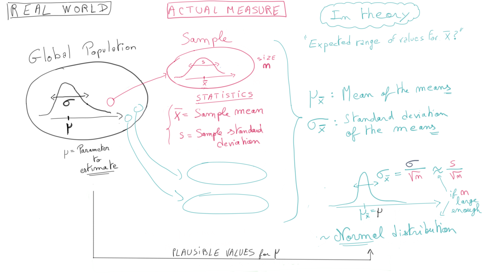
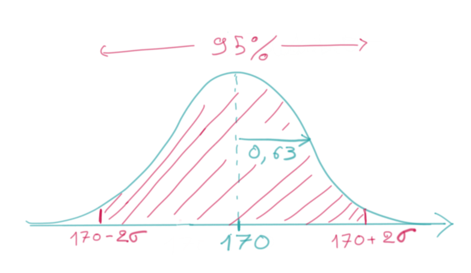
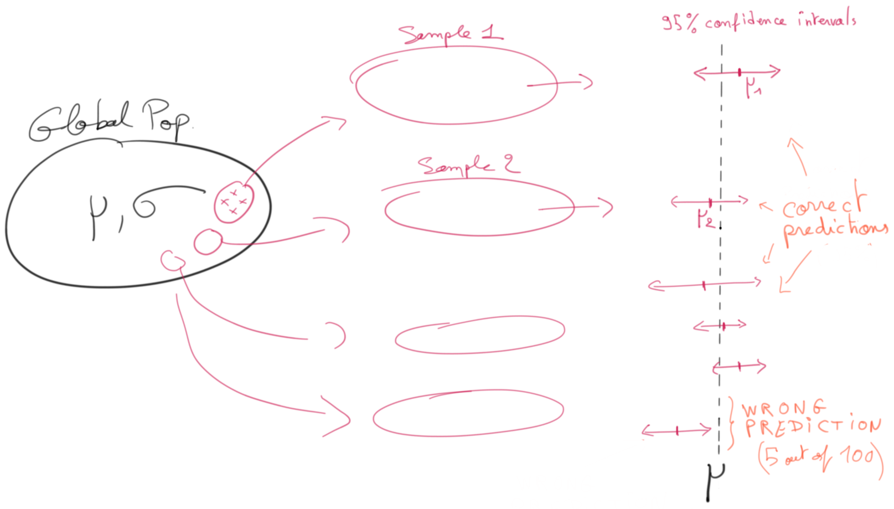
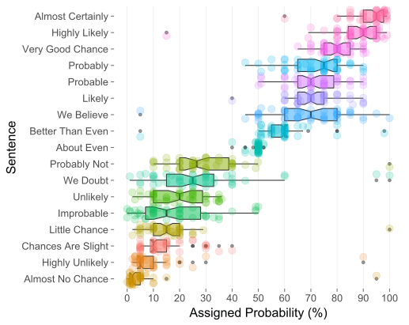
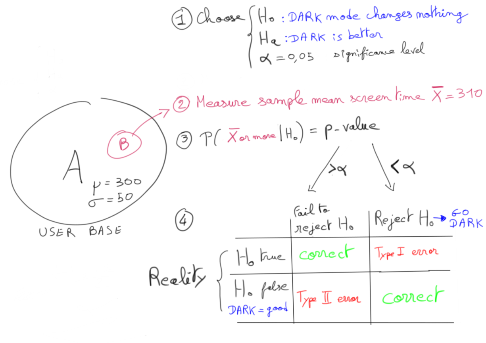
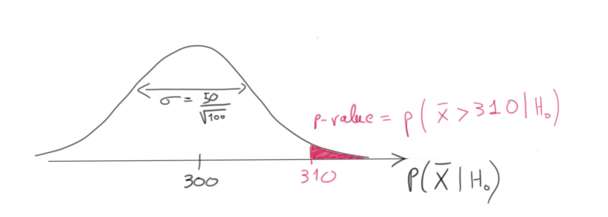
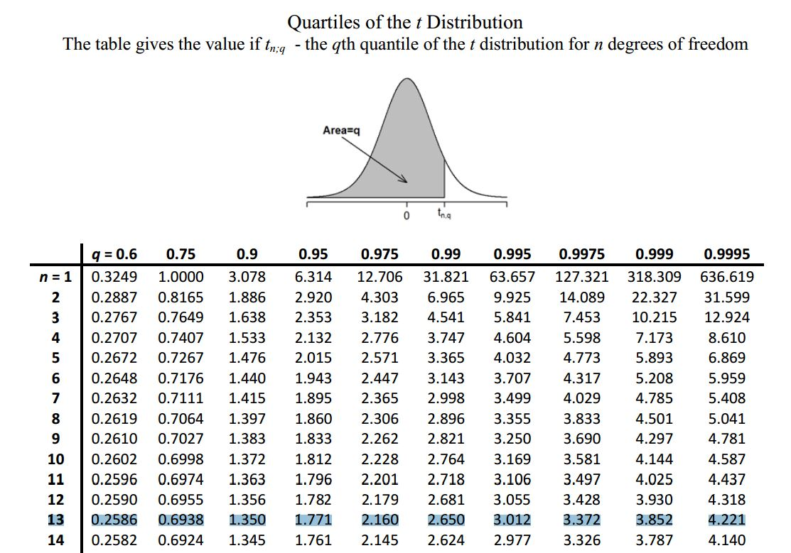
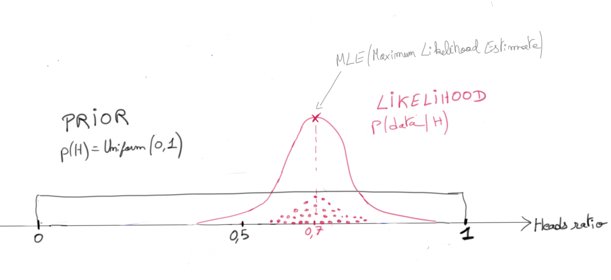
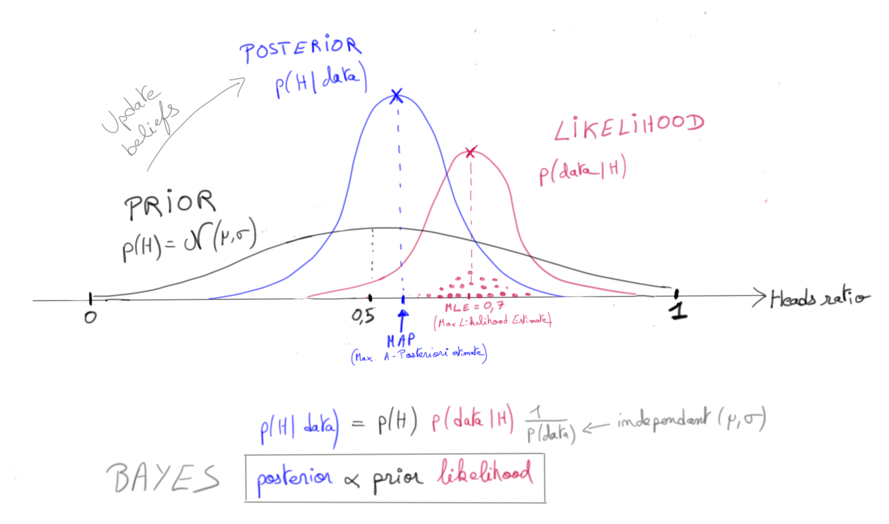

Statistical Inference
🎯 Comprendre comment estimer la vraie valeur d'un paramètre à partir d'un échantillon limité, quantifier la confiance dans ces estimations, et tester des hypothèses de manière rigoureuse.
🎯 Comprendre comment estimer la vraie valeur d'un paramètre à partir d'un échantillon limité, quantifier la confiance dans ces estimations, et tester des hypothèses de manière rigoureuse.
📋 Cheatsheet — Statistical Inference
Confidence Interval
from scipy import stats
## Distribution estimée de la moyenne (mu=170, standard error=0.63)
mu_estim = stats.norm(170, 0.63)
## Intervalle de confiance à 95%
confidence_interval = 0.95
sup_proba = (1 + confidence_interval) / 2 # → 0.975
inf_proba = (1 - confidence_interval) / 2 # → 0.025
mu_upper = mu_estim.ppf(sup_proba) # borne supérieure (ppf = inverse du cdf)
mu_lower = mu_estim.ppf(inf_proba) # borne inférieure
## Vérification : doit retourner ~0.95
round(mu_estim.cdf(mu_upper) - mu_estim.cdf(mu_lower), 2) # → 0.95p-value (z-test, grand échantillon)
from scipy.stats import norm
## Sous H0 : mu=300, sigma=50, n=100 → standard error = 50/sqrt(100) = 5
X = norm(300, 50 / (100 ** 0.5))
## P(X_bar >= 310 | H0) → test unilatéral droit
p_value = 1 - X.cdf(310)
round(p_value, 2) # → 0.02 (< 0.05 ⇒ on rejette H0)t-test (petit échantillon, sigma inconnu)
from scipy import stats
## Test si la moyenne d'un échantillon diffère d'une valeur de référence
t_stat, p_value = stats.ttest_1samp(sample, popmean=300) # retourne (t, p)
## Test deux groupes indépendants (A/B test)
t_stat, p_value = stats.ttest_ind(group_a, group_b) # retourne (t, p)z-score et T-statistique
## z-score : observation en nb d'écarts-types au-dessus/en-dessous de mu
z = (x - mu) / sigma
## Standard error (SE) de la moyenne empirique
se = sigma / (n ** 0.5) # ou s/sqrt(n) si sigma inconnu
## T-statistique (petit n, sigma inconnu) → suit Student(n-1)
t = (x_bar - mu) / (s / (n ** 0.5))Bayesian updating (intuition)
## Prior : p(H) = N(0.5, 0.3) → croyance initiale (coin fair)
## Likelihood : p(data|H) = N(0.7, 0.1) → observé après 10 tirages
## Posterior : p(H|data) ∝ prior × likelihood → mise à jour bayésienne
## Sans prior fort : posterior ≈ likelihood (MLE)⚠️ Récapitulatif — Erreurs clés à éviter
Interpréter l'intervalle de confiance comme une probabilité sur μ
❌ "Il y a 95% de chances que μ soit entre 168.7 et 171.2"
✅ "Si on répète l'expérience, 95% des intervalles construits contiendront le vrai μ" — μ est fixe, pas aléatoire !
Confondre "ne pas rejeter H0" avec "accepter H0"
❌ p-value > 0.05 → "H0 est vraie, la feature n'a aucun effet"
✅ p-value > 0.05 → "On manque de preuves suffisantes pour rejeter H0" — ce n'est pas une preuve que H0 est vraie
Changer α après avoir vu les résultats (p-hacking)
❌ Observer p = 0.07, puis décider de fixer α = 0.10 pour rejeter H0
✅ Fixer α avant l'expérience en fonction du risque acceptable d'erreur de Type I (faux positif)
Utiliser un z-test quand n est petit et σ est inconnu
❌ norm(mu, s/sqrt(n)).cdf(x) avec n = 12 et σ non connu
✅ stats.ttest_1samp(sample, mu) — la loi de Student(n-1) est adaptée aux petits échantillons
Oublier que le CLT nécessite des observations indépendantes
❌ Appliquer le CLT sur des données corrélées (séries temporelles, cluster) sans correction
✅ Vérifier que l'échantillonnage est aléatoire et que n < 10% × N (population finie)
1) Motivation
1.1 Problème business
Comment augmenter la satisfaction client tout en maintenant un volume de commandes sain ? La satisfaction se mesure via le review_score.
👉 On cherche à identifier les features les plus impactantes sur le review_score
Si on trouve que wait_time est fortement corrélé à un mauvais score :
Question clé : Comment être confiant que nos findings sur des données historiques vont bien se généraliser ? On ne peut pas attendre des années pour le vérifier.
Welcome Statistical Inference Analysis !
1️⃣ Entraîner des modèles ML linéaires pour trouver des corrélations
2️⃣ Utiliser le CLT pour quantifier la significativité statistique de ces findings
2) Rappels de probabilités
2.1 Concepts fondamentaux
| Concept | Définition | |
|---|---|---|
| Variable aléatoire X | Résultat numérique d'une expérience aléatoire | |
| Distribution p(X) = p(μ, σ) | Distribution sous-jacente de X — μ et σ sont ses "statistiques" | |
| Loi Normale N(μ, σ) | Entièrement décrite par μ et σ seulement | |
| Probabilité conditionnelle P(B\ | A) | Probabilité de B sachant A |
2.2 Théorème Central Limite (CLT)

Lorsqu'on considère des variables aléatoires indépendantes X₁…Xₙ avec une distribution commune p(μ, σ) :
- Leur moyenne X̄ converge vers une loi Normale quand n augmente
- Centrée sur μ, avec un écart-type σ/√n (= standard error)
Plus n est grand, plus la distribution de X̄ est resserrée autour de μ. C'est le fondement de toute l'inférence statistique.
2.3 z-score
Si x est une observation de X(μ, σ), son z-score est :
z = (x − μ) / σ
Le z-score exprime x en nombre d'écarts-types au-dessus ou en dessous de μ.
Pour la moyenne empirique : Z = (X̄ − μ) / (σ/√n) → N(0,1) quand n → ∞
3) Distribution d'échantillonnage & Intervalles de confiance
3.1 Estimer la taille moyenne des citoyens US
🎯 Objectif : estimer μ sur N = 331 M personnes
❌ Impossible de tout mesurer → on utilise un échantillon aléatoire
Méthode : sélectionner aléatoirement n = 1000 personnes 🎲
On calcule sur l'échantillon :
- la moyenne empirique X̄ₙ = 170 cm
- l'écart-type empirique s = 20 cm

3.2 Best Guess et Loi des Grands Nombres
Best Guess : X̄ₙ = 170 cm est notre meilleure estimation de μ.
Loi des Grands Nombres : X̄ₙ converge vers μ quand n → ∞ — c'est la base intuitive de l'estimation.
3.3 Intervalle de confiance (CLT)
Par le CLT, avec n assez grand et un échantillonnage aléatoire :
X̄ₙ ≈ N(μ, σ/√n) ≈ N(μ, 20/√1000) = N(μ, 0.63)

On a mesuré X̄ₙ = 170 cm → la distribution de μ la plus vraisemblable est N(170, 0.63)
C'est le Maximum Likelihood Estimate (MLE) pour μ.

👉 On lit : μ = 170 ± 2 × 0.63 [95% CI] ⇔ μ entre 168.7 et 171.2 cm
Interprétation correcte :
✅ Si on répète l'expérience, 95% des intervalles construits contiendront le vrai μ

✅ On est confiant à 95% que [168.7 – 171.2] capture la vraie taille moyenne.
❌ Ne pas dire "il y a 95% de chances que μ soit entre…" — μ est fixe, pas aléatoire !
## Vérification via la CDF (Cumulative Density Function)
from scipy import stats
mu_estim = stats.norm(170, 0.63) # distribution estimée de la moyenne
## Probabilité que mu soit entre 168.7 et 171.2
print('% confidence interval = ', round(mu_estim.cdf(171.2) - mu_estim.cdf(168.7), 2))## Output
% confidence interval = 0.95## Formule générale pour tout niveau de confiance
confidence_interval = 0.99
sup_proba = (1 + confidence_interval) / 2 # 99.5%
inf_proba = (1 - confidence_interval) / 2 # 0.5%
mu_upper_bound = mu_estim.ppf(sup_proba) # inverse du cdf → hauteur associée à la proba
mu_lower_bound = mu_estim.ppf(inf_proba)
print('mu_upper_bound: ', mu_upper_bound)
print('mu_lower_bound: ', mu_lower_bound)
print('% confidence interval = ', round(mu_estim.cdf(mu_upper_bound) - mu_estim.cdf(mu_lower_bound), 2))## Output
mu_upper_bound: 171.6227724612358
mu_lower_bound: 168.3772275387642
% confidence interval = 0.993.4 Perception humaine des niveaux de confiance
Noms courants selon l'IPCC (Intergovernmental Panel on Climate Change) :
| Niveau | Nom |
|---|---|
| 1-sigma (68%) | "likely" |
| 90% | "very likely" |
| 2-sigma (95%) | "extremely likely" |
| 3-sigma (99.7%) | "virtually certain" |
| 5-sigma | "proof" (seuil en physique théorique) |

3.5 Taille d'échantillon n — considérations
Quand n est-il assez grand pour le CLT ?
- n > 30 ⇒ CLT s'applique et s peut approximer σ dans les z-statistics
- n > 10 et observations non-skewed sans outliers ⇒ CLT s'applique encore
- Population globale connue comme normale ⇒ CLT s'applique même pour n petit
Quand n est-il assez petit pour des tirages indépendants (sans remise) ?
- n < 10% × N
4) Hypothesis Testing
4.1 Exemple — Tester une nouvelle feature d'app
Contexte : PM d'une app mobile. N = 1000 utilisateurs, μ = 300 sec/session, σ = 50 sec.
Hypothèse : passer en dark mode augmenterait le temps par session. Comment tester cela rigoureusement ?
4.2 Step ① — Design de l'expérience (A/B Test)
- Développer la feature (dark mode)
- Créer deux groupes : control group vs. treatment group
- Assigner aléatoirement n = 100 users au groupe traitement
- Déployer le dark mode uniquement au groupe traitement
- Collecter les stats : on mesure X̄₁₀₀ = 310 secondes

4.3 Step ② — Analyse statistique
- H0 (Null Hypothesis) : μ = 300 (inchangé en dark mode)
- Ha (Alternative Hypothesis) : μ > 300 (augmenté en dark mode)
- Significance Level α = 5% (choisi avant l'expérience)
- Calculer la p-value = P(X̄ₙ ≥ 310 | H0)
Règle de décision :
- p-value < α → on rejette H0 en faveur de Ha
- p-value > α → on ne peut pas rejeter H0 (≠ accepter H0 !)
Par le CLT (n=100 assez grand) : X̄₁₀₀ ≈ N(300, 50/√100) sous H0

from scipy.stats import norm
## Distribution de X_bar sous H0 : mu=300, se=50/sqrt(100)=5
X = norm(300, 50 / (100 ** 0.5))
## P(X_bar >= 310 | H0) → p-value du test unilatéral droit
p_value = 1 - X.cdf(310)
round(p_value, 2)## Output
0.02👍 p-value = 0.02 < 0.05 ⇒ On rejette H0 ⇒ Le dark mode a un effet réel !
4.4 Puissance d'un test statistique
La puissance = probabilité de rejeter correctement H0 quand elle doit l'être.
- Power = P(ne pas rater une bonne feature en A/B testing)
- Power = P(ne pas rater un médicament efficace en essai clinique)
- Power = 1 − P(Type II error)
👉 StatQuest - vidéo intuitive sur la puissance
4.5 Choisir α
α = 0.05 est le niveau standard (utilisé en essais cliniques notamment).
Type I error (Faux Positif) vs. Type II error (Faux Négatif) — le choix de α dépend de votre tolérance à chacun de ces risques.
❌ Ne jamais changer α après avoir vu les résultats pour faire passer son hypothèse.
✅ Choisir α avant l'expérience.
5) t-tests (petits échantillons)
5.1 Problème avec les petits n

Quand n est petit et σ inconnu, la Z-statistique pose deux problèmes :
- Elle ne peut pas être approximée par N(0,1)
- Elle ne peut pas être calculée sans connaître σ
Solution : utiliser la T-statistique T = (X̄ − μ) / (s/√n) qui suit une loi de Student Tₙ₋₁(0,1) — identique au raisonnement z-test, mais avec la bonne distribution !
5.2 Loi de Student
Tᵥ(μ, σ) — une distribution par degré de liberté ν :
- Queues plus épaisses que la loi Normale (plus conservatrice)
- Tᵥ → N quand ν → ∞
- Accessible via
scipy.stats.tou une t-table


👉 Statistics By Jim — Degrees of Freedom
5.3 CLT généralisé — récapitulatif
Pour X₁…Xₙ indépendantes, de moyenne μ et écart-type σ :
| Cas | Statistique | Distribution |
|---|---|---|
| n grand (> 30), σ connu | Z = (X̄ − μ) / (σ/√n) | N(0, 1) |
| n quelconque, σ inconnu | T = (X̄ − μ) / (s/√n) | Tₙ₋₁(0, 1) |
Pourquoi (n-1) ? → Bessel's Correction
6) Interprétation bayésienne
6.1 Problème — Tester l'équité d'une pièce
On tire une pièce n fois pour mesurer sa fairness : p(H) = probabilité de tomber sur Face.
🤔 Est-ce que μ = 0.5 ? La pièce est-elle équitable ?
6.2 Sans prior (fréquentiste)
On observe X̄ = 0.7 sur 10 tirages. Sans croyance préalable :
- Meilleure estimation (MLE) : μ = 0.7
- Distribution postérieure ≈ N(0.7, σ/√n) = N(0.7, 0.1)

6.3 Avec prior (bayésien)
On pense que la plupart des pièces sont équitables → prior : p(H) = N(0.5, 0.3)
Formule de Bayes : p(H|data) ∝ p(data|H) × p(H)
- Prior p(H) : croyance initiale
- Likelihood p(data|H) : vraisemblance des données observées
- Posterior p(H|data) : croyance mise à jour après l'expérience

👉 Le posterior est un compromis entre la croyance initiale et les données observées — plus les données sont nombreuses, plus elles prennent le dessus sur le prior.
7) Bibliographie
- 👉 3Blue1Brown — Bayesian Updating and Probability Density Functions
- 👉 Towards Data Science — Bayesian Inference for Parameter Estimation
- 👉 Khan Academy — Statistics and Probability (~20h)
- 👉 Hernán & Robins — Causal Inference: What if (textbook M.Sc.)
8) Projet Olist
8.1 Présentation
- 🗓 Fondé en 2015
- 🇧🇷 Opère au Brésil
- 💻 100% digital (Pure Digital Player)
- 🛒 Service e-commerce pour vendeurs — connecte de petits marchands aux grandes marketplaces (Amazon, Bahia, Walmart…)
- ✅ Offre des services de logistique et gestion de stocks
- ❗️ Ne vend rien directement aux consommateurs
8.2 Workflow vendeur ⚙️
- Rejoindre Olist
- Uploader son catalogue → Olist affiche les produits sur les marketplaces
- Recevoir une notification à chaque commande
- Remettre les articles à un transporteur tiers
8.3 Workflow client ⚙️
- Parcourir les produits sur les marketplaces
- Acheter via
Olist.store - Recevoir une date de livraison estimée
- Recevoir la commande
- Laisser un avis
Entre 2016 et mi-2018, un avis pouvait être laissé dès l'envoi de la commande — avant même réception du produit !
8.4 Dataset
- Publié sur Kaggle en novembre 2018 : 👉 kaggle.com/olistbr/brazilian-ecommerce
- ~100k commandes entre 2016 et 2018
- 8 fichiers CSV, ~120 MB
- Données réelles (informations identifiables anonymisées)

8.5 Plan du module
Unit 1 — Data Preparation
- Organiser le repo
- Préparer les données Orders dans une classe réutilisable
- Comprendre les données
Unit 2 & 3 — Data Analysis
- Décomposer le problème en analyses actionnables
- Utiliser la régression linéaire/logistique pour comprendre l'impact sur les review scores
Unit 4 — Visualisation & Dashboard
- Analyser et visualiser avec Plotly (en binôme)
- Construire un dashboard avec Dash
- Présenter les résultats
8.6 Challenges du jour
Challenge 1 : Setup du projet
Challenge 2 : Charger les données dans un dictionnaire de DataFrames
{
'orders': DataFrame, # données du fichier orders.csv
'sellers': DataFrame, # données du fichier sellers.csv
...
}Challenge 3 : Explorer les données
Challenge 4 : Préparer et enrichir les données orders pour la modélisation statistique
🚀 Your turn !
🧭 Introduction
Pourquoi l'inférence statistique ?
Imaginons que tu travailles pour un institut de sondage. Tu veux connaitre la taille moyenne de tous les Français — 68 millions de personnes. Mesurer tout le monde est impossible. Alors tu prends un échantillon : 1 000 personnes choisies au hasard. Tu calcules leur taille moyenne et tu te demandes : "Est-ce que ce chiffre reflète bien la réalité du pays entier ?"
C'est exactement ce que fait l'inférence statistique : tirer des conclusions sur une grande population à partir d'un petit échantillon, tout en mesurant l'incertitude de ces conclusions.
Les 3 idées clés à retenir
1. On ne peut jamais mesurer toute une population — on travaille toujours sur un échantillon.
2. La moyenne d'un échantillon suit une loi normale (grâce au Théorème Central Limite).
3. L'intervalle de confiance et la p-value sont deux outils pour quantifier l'incertitude.
Analogie fil rouge — le sondage : Tout au long de ce cours, imagine que tu estimes la taille moyenne des citoyens américains (330 millions de personnes). Tu sélectionnes 1 000 personnes au hasard. Toutes les formules du cours s'illustrent avec cet exemple concret.
Plan du cours
- Rappels de probabilités et Théorème Central Limite (CLT)
- Distribution d'échantillonnage et intervalles de confiance
- Tests d'hypothèses et p-value
- t-test pour les petits échantillons
- Interprétation bayésienne (intuition)
1. Rappels de probabilités
1.1 Les concepts de base
Avant de plonger dans l'inférence, rappelons quelques notions fondamentales.
| Concept | En clair |
|---|---|
| Variable aléatoire $X$ | Une grandeur dont la valeur dépend du hasard. Ex : la taille d'une personne choisie au hasard. |
| Distribution $p(X)$ | La "forme" de la répartition des valeurs possibles de $X$. Elle est résumée par $\mu$ (moyenne) et $\sigma$ (écart-type). |
| Loi Normale $\mathcal{N}(\mu, \sigma)$ | La fameuse courbe en cloche. Complètement décrite par deux paramètres : $\mu$ et $\sigma$. |
| Probabilité conditionnelle $P(B \mid A)$ | La probabilité que $B$ se réalise, sachant que $A$ est déjà arrivé. |
1.2 Le Théorème Central Limite (CLT) — l'idée la plus importante du cours
Le CLT en une phrase : si tu prends beaucoup de moyennes d'échantillons aléatoires, ces moyennes suivent une loi normale — même si les données originales ne sont pas du tout normales.
Formellement : soit $X_1, X_2, \ldots, X_n$ des variables aléatoires indépendantes, toutes issues de la même distribution de moyenne $\mu$ et d'écart-type $\sigma$. Alors, quand $n$ devient grand :
Traduction symbole par symbole :
| Symbole | Signification |
|---|---|
| $\bar{X}_n$ | La moyenne calculée sur un échantillon de taille $n$ |
| $\mathcal{N}(\ldots)$ | "Suit une loi normale centrée sur..." |
| $\mu$ | La vraie moyenne de la population (inconnue !) |
| $\frac{\sigma}{\sqrt{n}}$ | L'erreur standard (standard error) — à quel point la moyenne d'un échantillon peut varier |
Intuition : plus ton échantillon est grand, plus ta moyenne est précise. Si $n = 4$, l'erreur standard vaut $\sigma/2$. Si $n = 100$, elle vaut $\sigma/10$. Multiplier la taille de l'échantillon par 100 divise l'incertitude par 10.
Exemple numérique : taille des Américains, $\sigma = 20$ cm, $n = 1000$.
La moyenne de l'échantillon ne dévie donc que de $\pm 0.63$ cm en moyenne.
Le CLT ne s'applique correctement que si les observations sont indépendantes (tirées au hasard, sans lien entre elles). Attention aux séries temporelles ou aux données corrélées !
1.3 Le z-score — mesurer l'écart en "nombre d'écarts-types"
Le z-score transforme n'importe quelle valeur en un nombre sans unité : "combien d'écarts-types suis-je au-dessus ou en-dessous de la moyenne ?"
Traduction :
| Symbole | Signification |
|---|---|
| $x$ | L'observation dont on veut mesurer l'écart |
| $\mu$ | La moyenne de référence (la moyenne de la population) |
| $\sigma$ | L'écart-type de la population |
| $z$ | Le résultat : le nombre d'écarts-types d'écart |
Exemple : si la taille moyenne est $\mu = 170$ cm avec $\sigma = 20$ cm, et qu'une personne mesure 190 cm :
Cette personne est à 1 écart-type au-dessus de la moyenne. Rien d'extraordinaire.
Pour la moyenne d'un échantillon (et non plus une observation individuelle), on remplace $\sigma$ par l'erreur standard $\sigma/\sqrt{n}$ :
Traduction : ce z-score de la moyenne suit une loi normale standard (centrée sur 0, écart-type 1) quand $n$ est grand.
2. Distribution d'échantillonnage et intervalles de confiance
2.1 Le problème : estimer une vraie valeur inconnue
On veut connaitre $\mu$ = la taille moyenne de tous les Américains ($N = 331$ millions). C'est impossible à mesurer directement.
On prend donc un échantillon aléatoire de $n = 1000$ personnes. On calcule :
- La moyenne empirique : $\bar{X}_n = 170$ cm
- L'écart-type empirique : $s = 20$ cm
Loi des Grands Nombres : plus $n$ est grand, plus $\bar{X}_n$ se rapproche de $\mu$. C'est l'intuition qui justifie d'utiliser la moyenne d'échantillon comme estimation de la vraie moyenne.
2.2 Construire l'intervalle de confiance
Par le CLT, on sait que :
On a observé $\bar{X}_n = 170$ cm. Notre meilleure estimation (Maximum de Vraisemblance, MLE) est donc que $\mu$ suit approximativement $\mathcal{N}(170,\ 0.63)$.
À partir de là, on peut calculer un intervalle de confiance à 95% :
La formule générale pour un intervalle de confiance au niveau $(1 - \alpha)$ est :
Traduction symbole par symbole :
| Symbole | Signification |
|---|---|
| $\bar{X}_n$ | La moyenne calculée sur l'échantillon |
| $z_{1-\alpha/2}$ | Le "multiplicateur" issu de la loi normale. Pour 95% : $z = 1.96 \approx 2$. Pour 99% : $z \approx 2.58$ |
| $s$ | L'écart-type estimé sur l'échantillon (on ne connait pas $\sigma$) |
| $\sqrt{n}$ | La racine carrée de la taille de l'échantillon |
| $s/\sqrt{n}$ | L'erreur standard : l'incertitude sur la moyenne |
Exemple numérique : $\bar{X}_n = 170$, $s = 20$, $n = 1000$.
2.3 Interprétation correcte de l'intervalle de confiance
L'erreur la plus fréquente : dire "il y a 95% de chances que $\mu$ soit entre 168.7 et 171.2 cm". C'est faux !
La vraie interprétation : si on répétait l'expérience 100 fois (100 sondages différents de 1 000 personnes), environ 95 de ces intervalles construits contiendraient le vrai $\mu$. La vraie valeur $\mu$ est fixe — c'est l'intervalle qui est aléatoire !
Formulation correcte : "On est confiant à 95% que l'intervalle $[168.7 ; 171.2]$ capture la vraie taille moyenne des Américains."
2.4 Code Python — calculer un intervalle de confiance
Voici comment calculer un intervalle de confiance en Python avec scipy.
from scipy import stats
# On modélise la distribution de mu grâce au CLT
# Centre : notre estimation 170 cm, écart-type : l'erreur standard 0.63 cm
mu_estim = stats.norm(170, 0.63) # distribution N(170, 0.63)
# On veut un intervalle de confiance à 95%
confidence_interval = 0.95
# Les bornes en termes de probabilité cumulée :
# - La borne sup correspond à la probabilité 97.5% (= (1 + 0.95) / 2)
# - La borne inf correspond à la probabilité 2.5% (= (1 - 0.95) / 2)
sup_proba = (1 + confidence_interval) / 2 # → 0.975
inf_proba = (1 - confidence_interval) / 2 # → 0.025
# .ppf() = "Percent Point Function" = inverse de la CDF
# Donne la valeur de x telle que P(X <= x) = proba
mu_upper = mu_estim.ppf(sup_proba) # borne supérieure → ~171.23
mu_lower = mu_estim.ppf(inf_proba) # borne inférieure → ~168.77
# Vérification : la différence de CDF entre les deux bornes doit valoir 0.95
round(mu_estim.cdf(mu_upper) - mu_estim.cdf(mu_lower), 2) # → 0.95Récap du code : on modélise $\mu$ comme une loi normale centrée sur notre estimation (170 cm) avec l'erreur standard comme écart-type. .ppf() est l'inverse de la CDF — elle répond à "quelle valeur correspond à telle probabilité cumulée ?". On récupère ainsi les deux bornes de l'intervalle.
2.5 Les niveaux de confiance en pratique
Le GIEC (Intergovernmental Panel on Climate Change) utilise ces noms courants :
| Niveau de confiance | Nom informel |
|---|---|
| 68% (1 sigma) | "probable" |
| 90% | "très probable" |
| 95% (2 sigma) | "extrêmement probable" |
| 99.7% (3 sigma) | "virtuellement certain" |
| 5 sigma | "preuve" (standard en physique des particules) |
2.6 Quelle taille d'échantillon est suffisante ?
Règle pratique pour le CLT :
- $n > 30$ : le CLT s'applique, et $s$ peut approximer $\sigma$
- $n > 10$ avec des données sans valeurs aberrantes ni forte asymétrie : le CLT tient encore
- Population connue comme normale : le CLT s'applique même pour $n$ petit
Pour des tirages indépendants (sans remise) :
- Il faut que $n < 10\% \times N$ (taille de l'échantillon < 10% de la population totale)
3. Tests d'hypothèses (Hypothesis Testing)
3.1 Le problème : est-ce que mon observation est due au hasard ?
Contexte : tu es Product Manager d'une app mobile. Ton app a $N = 1000$ utilisateurs avec une durée de session moyenne $\mu = 300$ secondes ($\sigma = 50$ secondes). Tu veux tester si passer en dark mode augmente le temps de session.
Tu sélectionnes $n = 100$ utilisateurs, tu actives le dark mode pour eux uniquement. Résultat observé : $\bar{X}_{100} = 310$ secondes.
La grande question : est-ce que ces 10 secondes de plus sont vraiment dues au dark mode, ou juste du hasard d'échantillonnage ?
3.2 Les 4 étapes d'un test statistique
Etape 1 — Design de l'expérience (A/B Test)
- Développer la feature (dark mode)
- Créer deux groupes : groupe contrôle (app normale) vs. groupe traitement (dark mode)
- Assigner aléatoirement les 100 utilisateurs au groupe traitement
- Collecter les données après un certain temps
Etape 2 — Poser les hypothèses
- $H_0$ (Hypothèse Nulle) : $\mu = 300$ sec — le dark mode ne change rien
- $H_a$ (Hypothèse Alternative) : $\mu > 300$ sec — le dark mode augmente le temps de session
$H_0$ est toujours l'hypothèse du "statu quo", du "rien ne change". On cherche à la rejeter pour prouver qu'il se passe quelque chose.
Etape 3 — Choisir le seuil de significativité $\alpha$
On fixe $\alpha = 0.05$ (5%). C'est le standard le plus utilisé.
Il faut fixer $\alpha$ AVANT de voir les résultats. Le fixer après en fonction des résultats observés, c'est du p-hacking — une pratique frauduleuse qui fausse les conclusions.
Etape 4 — Calculer la p-value et décider
La p-value est la probabilité d'observer un résultat aussi extrême (ou plus) que celui qu'on a mesuré, en supposant que $H_0$ est vraie.
Par le CLT, sous $H_0$ : $\bar{X}_{100} \approx \mathcal{N}(300,\ 50/\sqrt{100}) = \mathcal{N}(300,\ 5)$
Règle de décision :
3.3 Code Python — calculer la p-value
from scipy.stats import norm
# Sous H0 : la distribution de la moyenne X_bar est N(300, 5)
# mu = 300 (hypothèse nulle), se = sigma / sqrt(n) = 50 / sqrt(100) = 5
X = norm(300, 50 / (100 ** 0.5)) # → N(300, 5)
# P(X_bar >= 310 | H0) = probabilité d'observer 310 ou plus si H0 est vraie
# = 1 - P(X_bar <= 310) = 1 - CDF(310)
p_value = 1 - X.cdf(310)
round(p_value, 2) # → 0.02Résultat : $\text{p-value} = 0.02 < \alpha = 0.05$
Conclusion : on rejette $H_0$. Le dark mode a un effet statistiquement significatif sur le temps de session.
Interprétation : si le dark mode ne changeait rien ($H_0$ vraie), il y aurait seulement 2% de chances d'observer une moyenne de 310 sec ou plus. C'est trop improbable pour être dû au hasard — on en déduit que le dark mode a bien un effet.
3.4 La puissance d'un test
La puissance d'un test est la probabilité de rejeter $H_0$ quand elle est effectivement fausse. Autrement dit, la probabilité de détecter un vrai effet.
Pourquoi c'est important ? Un test peu puissant "rate" de vrais effets. En médecine, une faible puissance signifie qu'on peut rater un médicament qui fonctionne vraiment.
3.5 Les deux types d'erreurs
| $H_0$ vraie | $H_0$ fausse | |
|---|---|---|
| On rejette $H_0$ | Erreur Type I (Faux Positif) — probabilité = $\alpha$ | Décision correcte — probabilité = Puissance |
| On ne rejette pas $H_0$ | Décision correcte | Erreur Type II (Faux Négatif) — probabilité = $\beta$ |
Erreur Type I : on croit que le dark mode marche, mais c'était du hasard. (Faux positif)
Erreur Type II : le dark mode marche vraiment, mais on ne l'a pas détecté. (Faux négatif)
Le choix de $\alpha$ reflète ta tolérance à l'erreur de type I. Plus $\alpha$ est petit, moins tu risques les faux positifs — mais plus tu risques les faux négatifs.
Piège majeur : $\text{p-value} > 0.05$ ne signifie PAS que $H_0$ est vraie ! Cela signifie seulement qu'on manque de preuves suffisantes pour la rejeter. C'est une nuance cruciale.
4. Le t-test — pour les petits échantillons
4.1 Pourquoi le z-test ne suffit pas toujours
Jusqu'ici on a utilisé le z-test, valable quand :
- $n$ est grand (> 30)
- $\sigma$ (l'écart-type de la population) est connu
Mais si $n$ est petit (par exemple $n = 12$) et qu'on ne connait pas $\sigma$ (ce qui est presque toujours le cas en pratique), la Z-statistique est trop imprécise.
Le problème : quand $n$ est petit, $s$ (l'écart-type de l'échantillon) est lui-même une estimation imprécise de $\sigma$. Utiliser $\mathcal{N}(0,1)$ sous-estime l'incertitude réelle.
4.2 La T-statistique et la loi de Student
Solution : remplacer le z-score par la T-statistique, qui utilise $s$ à la place de $\sigma$ et suit une loi de Student plutôt qu'une loi normale.
Traduction symbole par symbole :
| Symbole | Signification |
|---|---|
| $\bar{X}$ | La moyenne de l'échantillon |
| $\mu$ | La valeur de référence testée (celle de $H_0$) |
| $s$ | L'écart-type estimé sur l'échantillon (on ne connait pas $\sigma$) |
| $\sqrt{n}$ | La racine carrée de la taille de l'échantillon |
| $T$ | La statistique de test — suit $t_{n-1}(0, 1)$ |
Cette statistique $T$ ne suit pas $\mathcal{N}(0,1)$ mais la loi de Student à $n-1$ degrés de liberté, notée $t_{n-1}$.
Pourquoi $n - 1$ degrés de liberté ? Parce qu'on a "dépensé" une information pour estimer la moyenne. Il ne reste donc que $n-1$ "informations libres" pour estimer la variance. C'est la correction de Bessel.
4.3 La loi de Student — intuition visuelle
La loi de Student ressemble à la loi normale, mais avec des queues plus épaisses (plus de masse aux extrêmes). Cela reflète l'incertitude supplémentaire due au petit échantillon.
- Avec peu de données ($n$ petit, $\nu$ petit) : queues très épaisses — beaucoup d'incertitude
- Quand $n \to \infty$ : la loi de Student converge vers $\mathcal{N}(0, 1)$
Pourquoi des queues plus épaisses ? Parce qu'avec un petit échantillon, notre estimation $s$ de $\sigma$ peut être loin de la vraie valeur. Il faut donc être plus "conservateur" et accepter que les valeurs extrêmes sont plus probables qu'on ne le pense.
4.4 Récapitulatif — z-test vs t-test
| Situation | Statistique utilisée | Distribution |
|---|---|---|
| $n$ grand (> 30), $\sigma$ connu | $Z = \dfrac{\bar{X} - \mu}{\sigma / \sqrt{n}}$ | $\mathcal{N}(0, 1)$ |
| $n$ quelconque, $\sigma$ inconnu | $T = \dfrac{\bar{X} - \mu}{s / \sqrt{n}}$ | $t_{n-1}(0, 1)$ |
En pratique : quand tu ne connais pas $\sigma$ (presque toujours), utilise le t-test. Si $n > 30$, les résultats du t-test et du z-test sont très proches.
4.5 Code Python — t-test avec scipy
from scipy import stats
# Exemple 1 : tester si la moyenne d'un échantillon diffère d'une valeur de référence
# Ici, on teste si la moyenne de 'sample' est différente de 300
t_stat, p_value = stats.ttest_1samp(sample, popmean=300)
# t_stat : la valeur de la T-statistique calculée
# p_value : la p-value associée (test bilatéral par défaut)
# Exemple 2 : comparer deux groupes indépendants (A/B test)
# Ici, on teste si group_a et group_b ont la même moyenne
t_stat, p_value = stats.ttest_ind(group_a, group_b)
# Retourne (T-statistique, p-value) pour le test bilatéral H0: mu_a = mu_bRécap du code : ttest_1samp compare un échantillon à une valeur fixe. ttest_ind compare deux groupes entre eux (parfait pour les A/B tests). Dans les deux cas, scipy gère automatiquement la loi de Student avec le bon nombre de degrés de liberté.
Ne jamais utiliser norm(mu, s/sqrt(n)).cdf(x) quand $n$ est petit et $\sigma$ inconnu. Toujours utiliser stats.ttest_1samp(sample, mu) dans ce cas — la loi de Student est la bonne distribution.
5. Interprétation bayésienne (intuition)
5.1 Un problème différent : la pièce équitable
On lance une pièce $n = 10$ fois. On obtient 7 faces (70%). La pièce est-elle truquée ?
L'approche fréquentiste (z-test ou t-test) répond : "Quelle est la probabilité d'observer 70% de faces si la pièce est équitable ?" Elle ne tient pas compte de nos croyances préalables.
L'approche bayésienne dit : "Avant l'expérience, je pense que la pièce est probablement équitable. L'expérience me fait réviser cette croyance, mais pas complètement."
5.2 Le théorème de Bayes
Traduction :
| Terme | Nom | Signification |
|---|---|---|
| $p(H)$ | Prior (a priori) | Ma croyance avant d'observer les données |
| $p(\text{données} \mid H)$ | Vraisemblance (likelihood) | La probabilité d'observer ces données si $H$ est vraie |
| $p(H \mid \text{données})$ | Posterior (a posteriori) | Ma croyance mise à jour après les données |
| $\propto$ | "Proportionnel à" | Le posterior est proportionnel au produit des deux termes |
Exemple numérique avec la pièce :
- Prior : je pense que la pièce est équitable → $p(H) \approx \mathcal{N}(0.5,\ 0.3)$ (croyance centrée sur 0.5)
- Likelihood : j'observe 70% de faces → $p(\text{données} \mid H) \approx \mathcal{N}(0.7,\ 0.1)$
- Posterior : compromis entre les deux → centré quelque part entre 0.5 et 0.7
Intuition clé : le posterior est un compromis entre tes croyances initiales et les données. Si tes données sont nombreuses, elles "écrasent" le prior. Si tes données sont rares, le prior a plus d'influence.
Quand le prior est vague (peu informatif), le posterior se rapproche du Maximum de Vraisemblance (MLE) — c'est le lien entre l'approche bayésienne et l'approche fréquentiste.
# Résumé conceptuel de l'approche bayésienne (pas de code scipy ici)
# Prior : p(H) = N(0.5, 0.3) → croyance initiale (pièce équitable)
# Likelihood : p(data|H) = N(0.7, 0.1) → observé après 10 tirages (70% faces)
# Posterior : p(H|data) proportionnel à prior * likelihood → mise à jour bayésienne
# Sans prior fort : posterior ≈ likelihood (equivalent au MLE fréquentiste)6. Erreurs classiques à éviter
Erreur 1 — Mauvaise interprétation de l'intervalle de confiance
- Faux : "Il y a 95% de chances que $\mu$ soit entre 168.7 et 171.2"
- Juste : "95% des intervalles construits de cette façon contiendraient $\mu$"
$\mu$ est une constante fixe — c'est l'intervalle qui est aléatoire !
Erreur 2 — Confondre "ne pas rejeter $H_0$" et "accepter $H_0$"
- Faux : "p-value = 0.08 > 0.05, donc $H_0$ est vraie, la feature n'a aucun effet"
- Juste : "On manque de preuves suffisantes pour rejeter $H_0$" — ce n'est pas une preuve que $H_0$ est vraie
Erreur 3 — Le p-hacking
- Faux : observer $p = 0.07$, puis décider de fixer $\alpha = 0.10$ pour pouvoir rejeter $H_0$
- Juste : fixer $\alpha$ avant l'expérience selon le risque acceptable
Changer $\alpha$ après avoir vu les résultats est une fraude statistique.
Erreur 4 — z-test avec petit $n$ et $\sigma$ inconnu
- Faux : norm(mu, s/sqrt(n)).cdf(x) avec $n = 12$ et $\sigma$ non connu
- Juste : stats.ttest_1samp(sample, mu) — utiliser la loi de Student
Erreur 5 — CLT sur des données corrélées
- Faux : appliquer le CLT sur des séries temporelles ou des clusters sans correction
- Juste : vérifier que l'échantillonnage est aléatoire et que $n < 10\% \times N$
🎯 Questions de vérification
Question 1. Tu calcules un intervalle de confiance à 95% : $[45.2 ; 52.8]$. Un collègue dit : "Génial, il y a 95% de chances que la vraie valeur soit dans cet intervalle." Est-il dans le vrai ? Explique pourquoi.
Question 2. Tu lances un A/B test sur une nouvelle fonctionnalité. Après analyse, tu obtiens $\text{p-value} = 0.12$. Ton manager conclut : "La fonctionnalité n'a aucun effet." Est-il dans le vrai ? Que lui répondre ?
Question 3. Tu veux comparer le panier moyen de deux groupes clients avec $n_A = 15$ et $n_B = 18$. Tu ne connais pas l'écart-type de la population. Quel test statistique utilises-tu et pourquoi ?
Question 4. Quelle est la différence entre l'erreur standard $(\sigma/\sqrt{n})$ et l'écart-type $(\sigma)$ ? Qu'est-ce que chacun mesure ?
📌 TL;DR
- L'inférence statistique permet d'estimer les paramètres d'une population (ex. : $\mu$) à partir d'un échantillon limité.
- Le Théorème Central Limite garantit que la moyenne d'un échantillon suit $\mathcal{N}(\mu, \sigma/\sqrt{n})$ pour $n$ grand.
- L'erreur standard $s/\sqrt{n}$ mesure la précision de l'estimation : plus $n$ est grand, plus elle est petite.
- Un intervalle de confiance à 95% signifie que 95% des intervalles construits par cette méthode contiendraient le vrai paramètre — et non pas que le paramètre a 95% de chances d'y être.
- La p-value = probabilité d'observer un résultat aussi extrême sous $H_0$. Si $\text{p-value} < \alpha$, on rejette $H_0$.
- $\text{p-value} > \alpha$ ne signifie pas que $H_0$ est vraie : cela signifie seulement qu'on manque de preuves pour la rejeter.
- Le t-test remplace le z-test quand $n$ est petit et $\sigma$ inconnu : la T-statistique suit une loi de Student $t_{n-1}$, plus "conservative" que la loi normale.
- L'approche bayésienne intègre une croyance initiale (prior) et la met à jour avec les données (likelihood) pour obtenir une croyance révisée (posterior).
- Fixer $\alpha$ avant l'expérience est une règle fondamentale — le p-hacking (modifier $\alpha$ après) est une fraude.
A. Concepts du cours
Population vs échantillon
L'inférence statistique cherche à tirer des conclusions sur une population (l'ensemble auquel on s'intéresse) à partir d'un échantillon (un sous-ensemble qu'on a effectivement observé).
| Population | Échantillon | |
|---|---|---|
| Notation | $\mu$, $\sigma$, $p$ | $\bar{x}$, $s$, $\hat{p}$ |
| Connue ? | Non (en général) | Oui (mesurée) |
| Inférable | Oui, à partir de l'échantillon | — |
L'estimateur est une statistique de l'échantillon utilisée pour deviner un paramètre de la population. La moyenne empirique $\bar{x}$ est l'estimateur de $\mu$. L'écart-type empirique $s$ est l'estimateur de $\sigma$.
Analogie : la population est l'océan, l'échantillon est un seau d'eau. L'inférence statistique vous demande de deviner la salinité de tout l'océan à partir d'un seau. Plus le seau est grand (plus l'échantillon est grand), plus l'estimation est fiable. Mais même un petit seau correctement prélevé donne une bonne estimation, parce que l'océan est suffisamment homogène à grande échelle.
Tests d'hypothèse
Le pattern fondamental de la statistique inférentielle :
- Formuler deux hypothèses concurrentes :
- $H_0$ (hypothèse nulle) : "il n'y a pas d'effet"
- $H_1$ (hypothèse alternative) : "il y a un effet"
- Choisir un test statistique adapté à la question
- Calculer une statistique de test à partir des données
- Décider : rejeter $H_0$ si la statistique est trop "extrême"
L'idée maîtresse : on suppose que $H_0$ est vraie, on calcule la probabilité d'obtenir nos données sous cette hypothèse, et si cette probabilité est très petite, on conclut que $H_0$ était probablement fausse.
Subtilité philosophique : on ne "prouve" jamais $H_1$. On rejette ou on ne rejette pas $H_0$. C'est la présomption d'innocence appliquée à la statistique : on suppose qu'il n'y a pas d'effet jusqu'à preuve du contraire. Cette discipline mentale évite beaucoup de faux positifs.
p-value et intervalle de confiance
La p-value est la probabilité, sous l'hypothèse nulle, d'observer une statistique aussi extrême ou plus extrême que celle calculée.
Lecture : si on suppose qu'il n'y a vraiment aucun effet, quelle est la probabilité d'avoir obtenu ces données par pur hasard ? Si elle est très petite, c'est qu'il y a probablement un effet.
Convention universelle : si p-value < 0.05, on rejette $H_0$. Le seuil $\alpha = 0.05$ est arbitraire (Fisher, 1925) et critiqué — beaucoup d'études exigent maintenant 0.01 ou même 0.001.
Une p-value n'est PAS :
- ❌ La probabilité que $H_0$ soit vraie
- ❌ La probabilité que $H_1$ soit vraie
- ❌ La force de l'effet
- ❌ Une preuve définitive
Une p-value EST :
- ✓ La probabilité, en supposant $H_0$, d'observer ces données par hasard
- ✓ Un seuil pour décider de rejeter $H_0$
- ✓ Très sensible à la taille d'échantillon
L'intervalle de confiance à 95% est complémentaire : c'est l'ensemble des valeurs du paramètre pour lesquelles la p-value serait > 0.05.
Formule pour un IC à 95% sur une moyenne :
Lecture : l'intervalle est centré sur la moyenne empirique $\bar{x}$, avec une demi-largeur égale à 1.96 fois l'erreur standard. Le facteur 1.96 vient du fait que 95% d'une loi normale est dans $[\mu - 1.96\sigma, \mu + 1.96\sigma]$.
from scipy import stats
data = [4.5, 5.2, 4.8, 5.1, 4.9, 5.3]
mean = np.mean(data)
ci_low, ci_high = stats.t.interval(
confidence=0.95,
df=len(data)-1,
loc=mean,
scale=stats.sem(data), # Erreur standard de la moyenne
)
print(f"{mean:.2f} (95% CI: [{ci_low:.2f}, {ci_high:.2f}])")Bonne pratique : rapportez toujours l'IC en plus de la p-value. Une p-value seule ne dit pas si l'effet est de 0.1 ou de 100. L'IC montre la précision et la magnitude.
Tests classiques
| Test | Quand l'utiliser | Hypothèse |
|---|---|---|
| t-test 1-sample | Comparer une moyenne à une valeur connue | Données ≈ normales |
| t-test 2-sample | Comparer deux moyennes indépendantes | Variances similaires |
| t-test paired | Comparer deux mesures sur les mêmes sujets | Avant/après traitement |
| Wilcoxon / Mann-Whitney | Versions non paramétriques (sans normalité) | Robuste aux outliers |
| chi² d'indépendance | Indépendance entre 2 var. catégorielles | Tableau de contingence |
| chi² d'ajustement | Var. suit-elle une distribution donnée | — |
| ANOVA | Comparer plus de 2 moyennes | Variances égales |
| Shapiro-Wilk | Tester la normalité d'un échantillon | — |
from scipy import stats
# T-test 2-sample : comparer ventes avant/après un changement
sales_before = [120, 135, 140, 110, 125]
sales_after = [150, 160, 145, 170, 155]
t_stat, p_value = stats.ttest_ind(sales_before, sales_after)
print(f"t = {t_stat:.3f}, p = {p_value:.4f}")
# Si p < 0.05, on rejette "pas de différence"
# Chi² d'indépendance sur un tableau de contingence
from scipy.stats import chi2_contingency
table = np.array([[80, 20], [60, 40]]) # 2 groupes × 2 catégories
chi2, p, dof, expected = chi2_contingency(table)B. Compléments avancés
Erreurs de type I et II, puissance
| $H_0$ vraie | $H_0$ fausse | |
|---|---|---|
| Rejeter $H_0$ | ❌ Type I (faux positif) | ✓ Vrai positif |
| Ne pas rejeter $H_0$ | ✓ Vrai négatif | ❌ Type II (faux négatif) |
- $\alpha$ = P(Type I) = seuil de p-value (0.05 typiquement)
- $\beta$ = P(Type II) = manquer un vrai effet
- Puissance = $1 - \beta$ = probabilité de détecter un vrai effet
Plus la puissance est haute, plus vous êtes sûr de ne pas rater un effet réel. Elle dépend de :
- Taille d'effet : un grand effet est facile à détecter
- Taille d'échantillon : plus de données → plus de puissance
- Variance : moins de bruit → plus de puissance
- $\alpha$ : un seuil plus laxiste → plus de puissance
from statsmodels.stats.power import TTestIndPower
analysis = TTestIndPower()
sample_size = analysis.solve_power(
effect_size=0.5, # Cohen's d modéré
alpha=0.05,
power=0.80,
)
print(f"Échantillon requis : {sample_size:.0f} par groupe")
# ≈ 64 par groupeBonne pratique : calculer la taille d'échantillon AVANT l'expérience, pas après. Une étude sous-dimensionnée gaspille du temps et donne des résultats irreproductibles. La règle d'or : viser une puissance de 0.80 minimum, idéalement 0.90 pour des décisions critiques.
Tests A/B en pratique
Le test A/B est l'application industrielle la plus courante de l'inférence statistique : vous comparez une variante (B) à une référence (A) sur une métrique business.
Pipeline canonique :
- Formuler une hypothèse claire : "Le bouton vert convertit mieux que le bleu"
- Calculer la taille d'échantillon nécessaire pour détecter l'effet minimum d'intérêt
- Randomiser les utilisateurs entre A et B (50/50 ou autre split)
- Laisser tourner jusqu'à atteindre la taille calculée — ne pas peeker avant
- Analyser : test du chi² (taux) ou t-test (montants)
- Conclure seulement si la significativité ET la taille d'effet sont atteintes
Anti-pattern majeur — le "peeking" : regarder les résultats au fur et à mesure et arrêter dès que p < 0.05. Cela inflate massivement le taux de faux positifs. Si vous devez monitorer en continu, utilisez des tests séquentiels (SPRT, mSPRT) ou ajustez le seuil avec une correction de Bonferroni séquentielle.
Bayésien vs fréquentiste
Deux philosophies de l'inférence cohabitent.
Fréquentiste (Fisher, Neyman, Pearson) : les paramètres sont des constantes inconnues. La probabilité est la fréquence à long terme. On définit des intervalles de confiance, des p-values, des tests d'hypothèse.
Bayésien (Bayes, Laplace, Jaynes) : les paramètres sont des variables aléatoires. On part d'une prior (croyance avant les données), on observe les données, et on calcule la posterior (croyance mise à jour) via Bayes :
Lecture : notre croyance sur $\theta$ après avoir vu les données est proportionnelle à la vraisemblance des données sous $\theta$, multipliée par notre croyance a priori sur $\theta$.
Avantages du bayésien :
- Permet d'incorporer une connaissance préalable (prior)
- Donne directement la probabilité que $\theta$ soit dans un intervalle (pas un IC bizarre)
- Permet de mettre à jour en continu sans peeking
- Naturel pour les modèles hiérarchiques
Inconvénients :
- Nécessite de spécifier une prior (peut sembler subjectif)
- Plus coûteux en calcul (MCMC, variational inference)
- Moins enseigné, moins d'outils mainstream
import pymc as pm
with pm.Model() as model:
# Prior : on pense que p est entre 0 et 1, uniformément
p = pm.Beta("p", alpha=1, beta=1)
# Likelihood : observation de 70 succès sur 100 essais
obs = pm.Binomial("obs", n=100, p=p, observed=70)
trace = pm.sample(1000)
# trace.posterior['p'] est maintenant la distribution a posteriori de pC. Questions de compréhension
Q1 : Vous obtenez p = 0.04 en comparant deux moyennes. Vous décidez de rejeter $H_0$ et de conclure qu'il y a une différence. Quelle est la probabilité que vous ayez tort ?
💡 Voir l'indice
Pas 0.04.
✅ Voir la réponse
Pas 0.04, malgré ce que tout le monde croit.
p = 0.04 dit : "Sous l'hypothèse nulle, la probabilité d'observer cette donnée ou pire est 4%". Ce n'est PAS la probabilité que $H_0$ soit vraie.
La probabilité d'avoir tort dépend aussi de :
- La prior (à quel point $H_0$ était plausible avant l'expérience)
- La puissance du test
- Le base rate des hypothèses vraies dans votre domaine
Si vous testez 1000 hypothèses dont seulement 5% sont vraiment vraies, une p-value de 0.05 a un taux de faux positifs de ~50% (selon Ioannidis).
C'est pourquoi des disciplines comme la médecine et la psychologie tournent vers des seuils plus stricts (0.005) ou abandonnent les p-values pour passer au bayésien.
La crise de la réplication est en grande partie due à cette confusion fondamentale.
Q2 : Vous comparez deux groupes avec un t-test et obtenez p = 0.001. Vous concluez que la différence est très importante. Êtes-vous correct ?
💡 Voir l'indice
Significativité statistique vs pratique.
✅ Voir la réponse
Non, vous confondez significativité statistique et importance pratique.
Une p-value très petite signifie juste que vous êtes très sûr qu'il y a une différence (≠ zéro), pas que la différence est grande.
Avec un échantillon de 1 million, vous pouvez détecter une différence de 0.01% comme statistiquement significative à p < 0.001 — sans la moindre importance business.
À l'inverse, une différence de 50% peut être non significative sur n=10.
Toujours rapporter la taille d'effet :
- Cohen's d pour des moyennes (0.2 = petit, 0.5 = moyen, 0.8 = grand)
- Différence relative en pourcentage
Le bon réflexe : "OK, la différence est statistiquement significative. Mais combien représente-t-elle en absolu, et est-ce que ça vaut le coût d'implémenter le changement ?"
C'est la différence entre un statisticien et un data scientist orienté business.
Q3 : Vous lancez un A/B test prévu pour 14 jours. Au jour 5, p = 0.04 et le PM veut arrêter et déployer. Que faut-il répondre ?
💡 Voir l'indice
Peeking.
✅ Voir la réponse
Refuser. Arrêter dès qu'on atteint p < 0.05 inflate dramatiquement le taux de faux positifs.
Si vous regardez les données 14 fois (une par jour), votre taux de faux positifs réel n'est plus 5% mais ~30%. C'est exactement comme rejouer plusieurs fois à la roulette en s'arrêtant au premier gain — vous gagnez "souvent" mais l'espérance est négative.
Trois solutions correctes :
- Attendre les 14 jours prévus et analyser une seule fois — c'est la seule approche fréquentiste rigoureuse.
- Utiliser un test séquentiel (SPRT, mSPRT, alpha-spending) qui ajuste le seuil en fonction du nombre de "looks". Optimizely et VWO le font automatiquement.
- Passer en bayésien : calculer la probabilité posterior que B > A. Cette probabilité est valide à n'importe quel moment, sans correction.
Question d'entretien data product : "Pourquoi ne pas arrêter un A/B test quand p < 0.05 ?" — la réponse exhaustive sépare les data scientists qui ont fait l'erreur de ceux qui ne l'ont jamais faite.
Ressources additionnelles
- Statistical Inference (Casella & Berger) — référence académique
- Statistical Rethinking (Richard McElreath) — meilleur cours bayésien
- Trustworthy Online Controlled Experiments (Kohavi, Tang, Xu) — bible des A/B tests
- Statistical Significance, Power and Sample Size — calculator interactif
- Why Most Published Research Findings Are False (Ioannidis, 2005) — papier culte sur la crise de réplication
- seeing-theory.brown.edu — Inferential Statistics — visualisations interactives